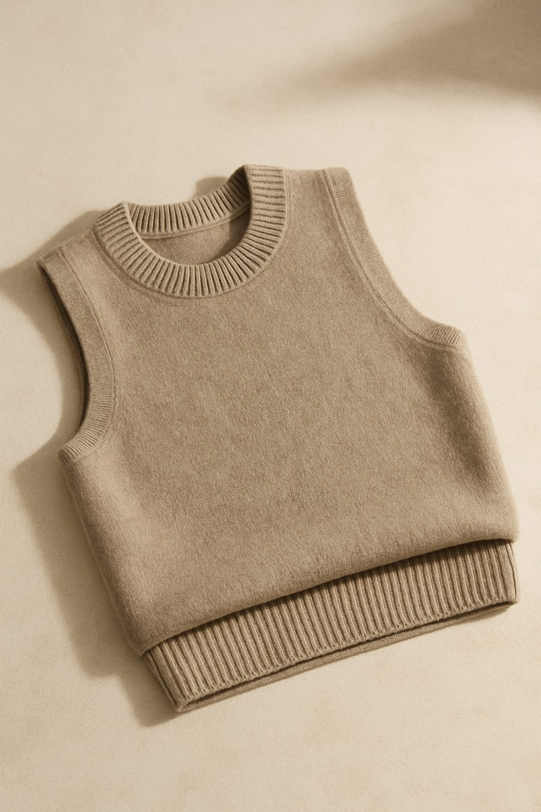
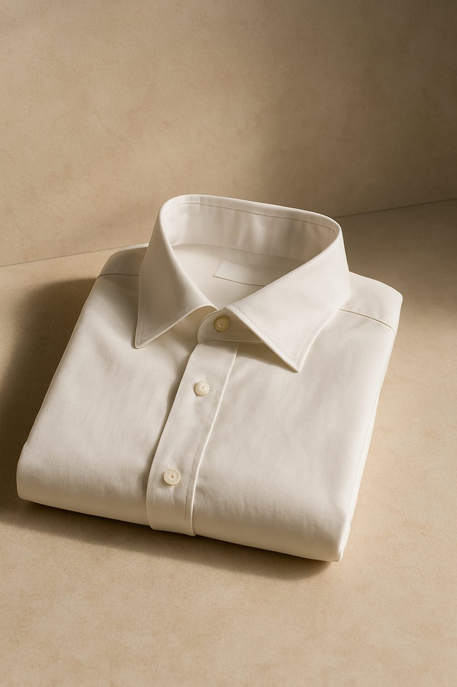

Considered by design.
Quiet, precise clothing for women who buy less and wear it longer. Made from natural fibres, cut for real life.
Shop the collectionMost clothing is worn a handful of times before it is replaced.

Fewer, better things.
FRØKEN was founded in Copenhagen on a simple idea: clothing should be considered before it is bought, and worn long after the season it was made for.
We work with a small number of mills across Europe, choosing natural fibres and finishes that age well. Every piece is designed to be worn on its own terms: no logos, no noise, nothing that needs explaining.
Cloth, up close.
Rest your cursor on a swatch. Hold still and it tells you what it is.





Five categories. No noise.
Outerwear
Coats and jackets built to be worn for years.

Knitwear
Merino, cashmere blends and cotton knits.
Dresses
Silk, linen and knit dresses for every register.

Tops
Blouses, shirts and fine-knit layers.
Accessories
Leather goods and the finishing details.
Twenty pieces. That is the whole shop.
See it allAll products
Get in touch
Our studio and shop is open Tuesday to Saturday. For sizing questions or anything else, write to us or ask the assistant.
- Studio & shop
- Kronprinsessegade 14, 1306 København K
- Hours
- Tue–Fri 11:00–18:00, Sat 11:00–15:00
Report an issue or leave feedback
Notice something wrong, or have a suggestion for the site? Tell us directly, it goes straight to our inbox.